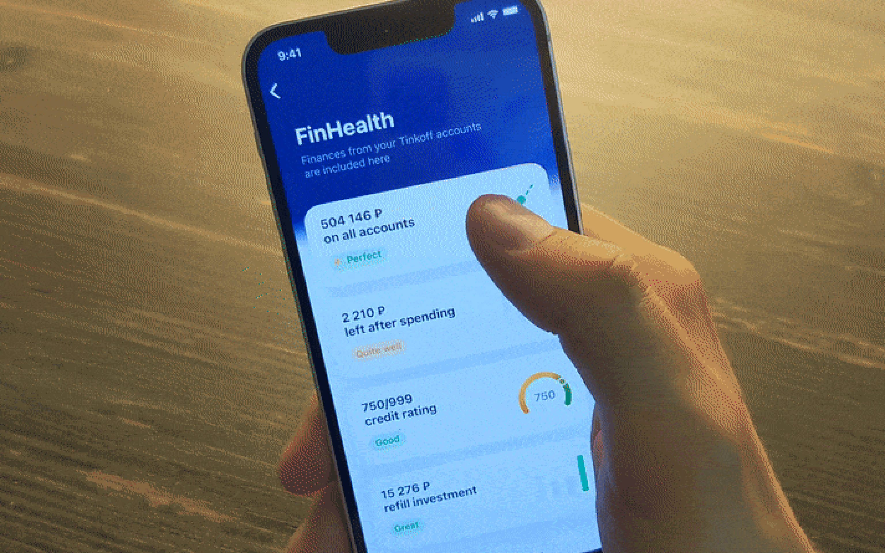
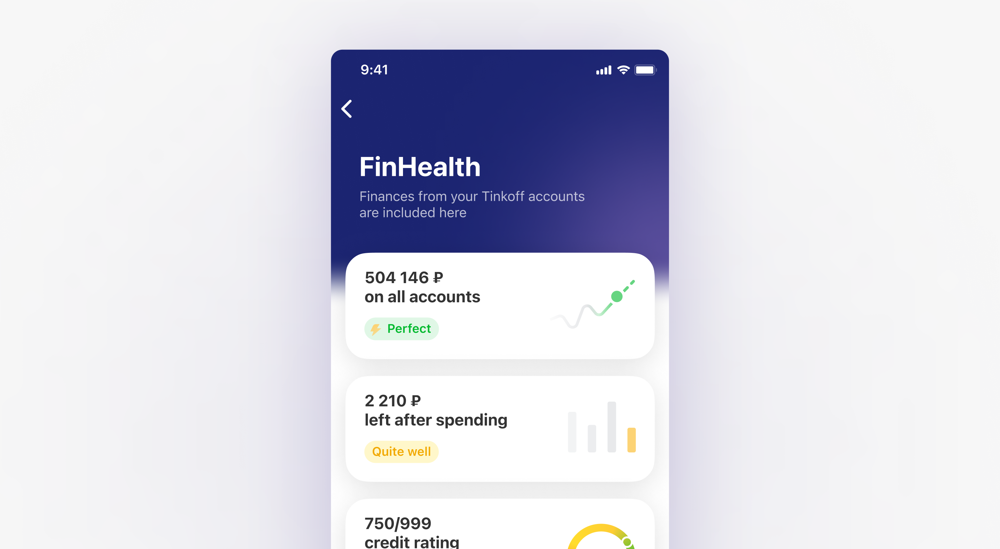
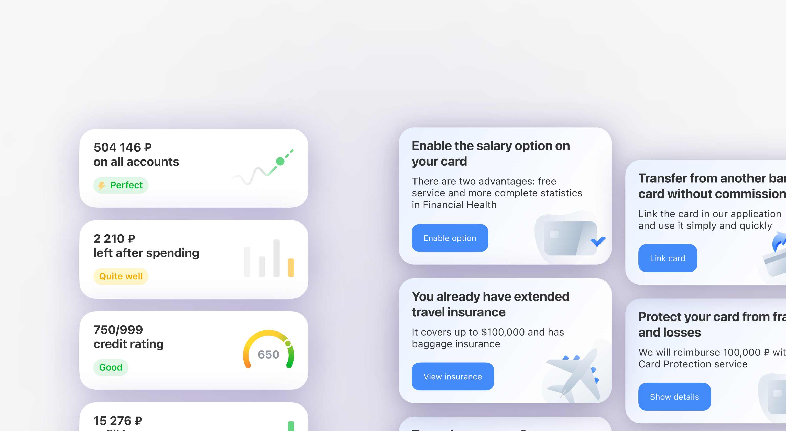
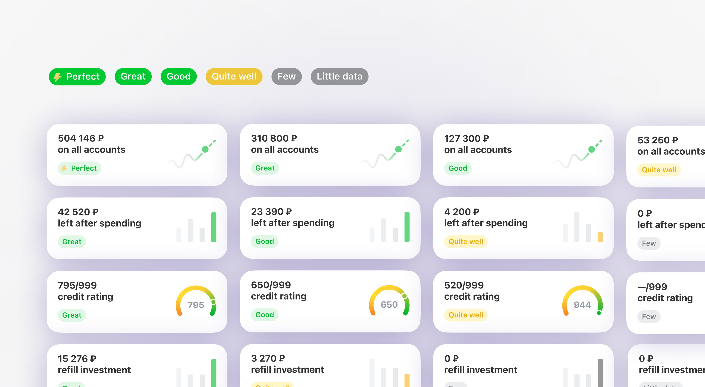

YooMoney is one of top payment service in Eastern Europe. It works like fintech-as-a-service with two types customers — individual users and merchants.
60+
million clients
180+
thousand websites
1.6+
million payments
Financial health project
Financial Health service is a part of PFM (Personal Financial Management) in Tinkoff app. It offers a comprehensive financial health index combining personal finance management, savings and spending, credit rating and investment products.
FinHealth provides personalised advice and insights for improving financial well-being and educates users on smart money management practices, including profitable bill payments, responsible borrowing and saving, and strategic investing and retirement planning.

My role
I have been involved with the project since the very beginning. Initially, the team consisted only of the product manager and me. After creating the concept, we assembled a complete team for iOS and Android development. As the only designer on the project, my responsibilities encompass product analytics, research, testing, interface development, and maintaining the design library.

My role
I have been involved with the project since the very beginning. Initially, the team consisted only of the product manager and me. After creating the concept, we assembled a complete team for iOS and Android development. As the only designer on the project, my responsibilities encompass product analytics, research, testing, interface development, and maintaining the design library.
The concept for this project had been contemplated several times within the company, but initiating it proved challenging. Eventually, the project kicked off, driven by the needs of the business and its customers.
Target audience
My product manager and I conducted analytics according to the intentions and successful savings capital on 12 million customers.
According to the results of analytics, there were three main segments:
A tiny part of customers (6%) can save and have impressive capital;
A small part (12%) who are trying to save money and do it a little;
Most customers (82%) spend all savings, those who are not trying to save.
We chose the primary audience from among those who are either trying to save or are capable of saving, and we work closely with them. Although it was a small segment, these customers have disposable income.
Customer needs
Initially, we hypothesised that customers must understand their financial situation more broadly. This need isn't original, but it reflects a fundamental desire for a sense of control and security. We've identified this as the primary goal for our customers. Furthermore, our hypothesis was confirmed during user interviews.
Specific examples of customer needs:
when there's an opportunity to make a profitable purchase, customers want to know their current financial standing to determine if they can afford it;
when planning to save for a vacation in six months, they want to understand their current savings rate and whether adjustments are necessary.
Business needs
The business objectives were defined as client retention and cross-selling.
Client retention is determined by the sticky factor, which measures the degree of customer involvement. It’s one of the key business indicators that FinHealth aims to improve. The sticky factor is the ratio of daily unique clients to monthly unique clients.
The second business goal is cross-selling, which involves marketing additional products to existing customers.
Additionally, the goal includes improving the financial literacy of customers. This not only enhances their overall well-being but also potentially increases business income.
Competitor analysis
My PM and I conducted a competitive analysis of Money Trackers, Personal Finance Management tools, and neo-banks. We analyzed more than 25 competitors and identified over 30 distinct features.
Subsequently, we categorized these features into three groups based on our implementation timeline: immediate, intermediate, and long-term priorities, sorting them by priority and difficulty.
our immediate focus included displaying total funds across all accounts, tracking savings, and showing invested amounts.;
the next phase, we wanted to add features like credit rating, subscription management, financial literacy tools, and a comprehensive view of capital, including cash and accounts from other banks;
additional features we planned to develop included detailed savings goals, financial predictions, and social profile integration.
Main tools: metrics and ideas
In analyzing the problem of users needing a sense of control, we identified two key entities: metrics with ratings and ideas for their improvement. This functionality has been effective in influencing users' perception of control.

Metrics
We developed financial metrics to help clients understand their overall financial state. These metrics change monthly, encouraging clients to check them regularly. After launch, our retention rate was 40%.
We carefully selected the metrics to display. Initially, the user testing showed the need to focus on the simplest and most understandable ones: total money in all accounts, savings rate, credit rating, and invested funds.
The metrics have various statuses, ranging from ideal to somewhat low. We avoided negative statuses like "bad," opting for "quite good" or "somewhat low." User interviews revealed that negative financial evaluations were poorly received.
Additionally, we included statuses for extreme cases like "Insufficient Data or Somewhat Low." For instance, if a user hasn't saved in a month, we don't label it as bad but suggest an opportunity to save in the next month.

Main tools: metrics and ideas
In analyzing the problem of users needing a sense of control, we identified two key entities: metrics with ratings and ideas for their improvement. This functionality has been effective in influencing users' perception of control.
Metrics
We developed financial metrics to help clients understand their overall financial state. These metrics change monthly, encouraging clients to check them regularly. After launch, our retention rate was 40%.
We carefully selected the metrics to display. Initially, the user testing showed the need to focus on the simplest and most understandable ones: total money in all accounts, savings rate, credit rating, and invested funds.
The metrics have various statuses, ranging from ideal to somewhat low. We avoided negative statuses like "bad," opting for "quite good" or "somewhat low." User interviews revealed that negative financial evaluations were poorly received.
Additionally, we included statuses for extreme cases like "Insufficient Data or Somewhat Low." For instance, if a user hasn't saved in a month, we don't label it as bad but suggest an opportunity to save in the next month.
Main screen iterations
We developed financial metrics to help clients understand their overall financial state. These metrics change monthly, encouraging clients to check them regularly. After launch, our retention rate was 40%.
We carefully selected the metrics to display. Initially, the user testing showed the need to focus on the simplest and most understandable ones: total money in all accounts, savings rate, credit rating, and invested funds.
The metrics have various statuses, ranging from ideal to somewhat low. We avoided negative statuses like "bad," opting for "quite good" or "somewhat low." User interviews revealed that negative financial evaluations were poorly received.
Additionally, we included statuses for extreme cases like "Insufficient Data or Somewhat Low." For instance, if a user hasn't saved in a month, we don't label it as bad but suggest an opportunity to save in the next month.
Goals we achieved
After all research, we identified our final goals for service:
Subsequently, we categorized these features into three groups based on our implementation timeline: immediate, intermediate, and long-term priorities, sorting them by priority and difficulty.
enhance financial literacy — ducate clients on managing personal finances to improve their financial status;
personalized financial planning — offer tools for budgeting, expense and investment planning, aiding users in achieving financial goals;
boost client engagement and loyalty — strengthen customer relations through useful tools and information, enhancing satisfaction and loyalty;
prevent financial issues — tools and advice for financial management can help avoid debt problems and poor credit scores;
data collection and analysis — service provides insights into user habits and needs, improving services and personalizing offers;
integration with other services — integrate with other app products for a broader range of solutions for users.